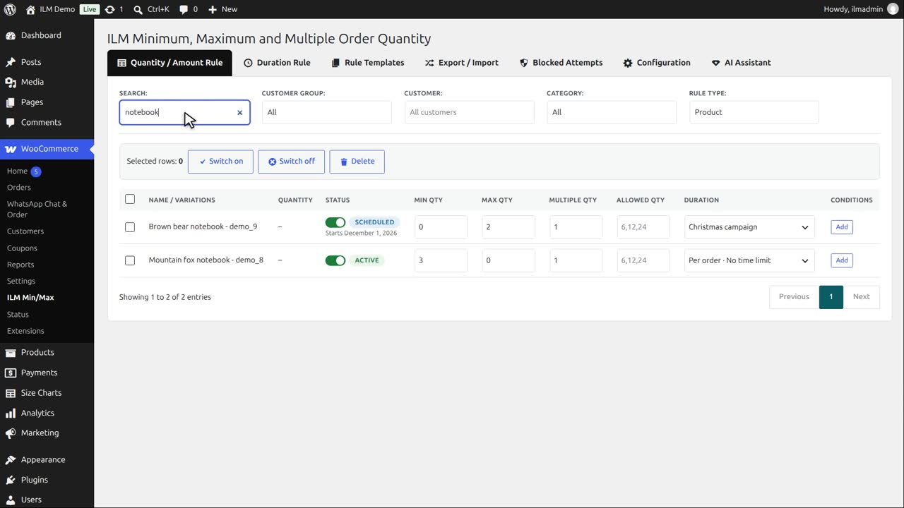
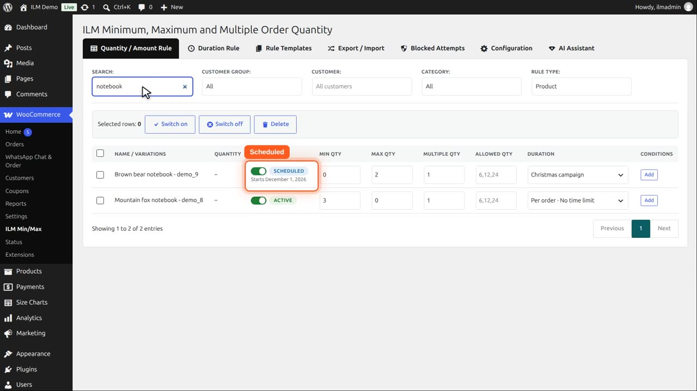
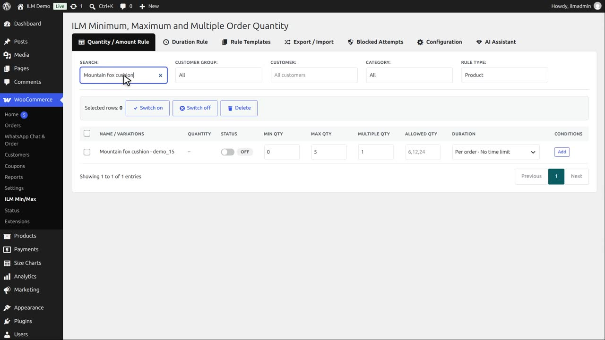
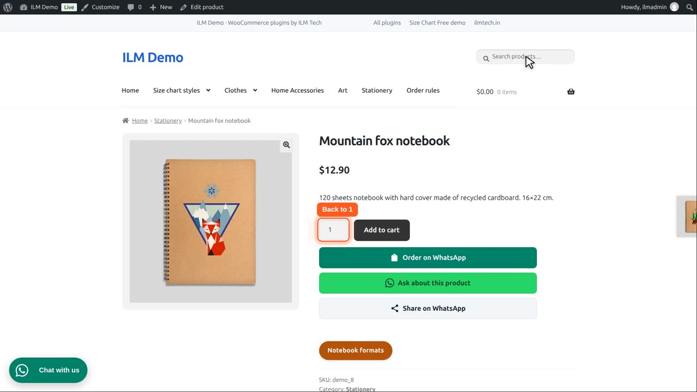
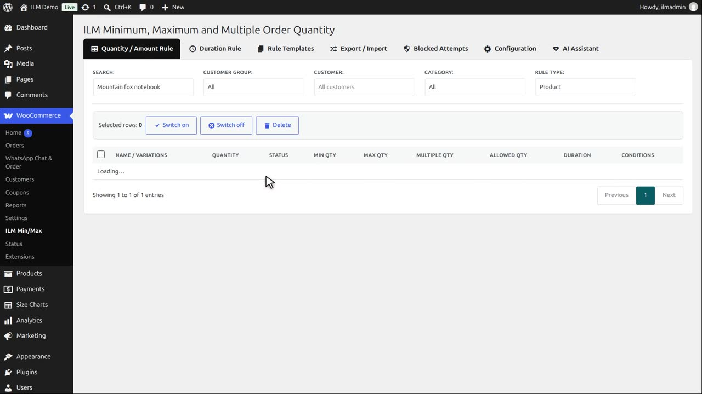
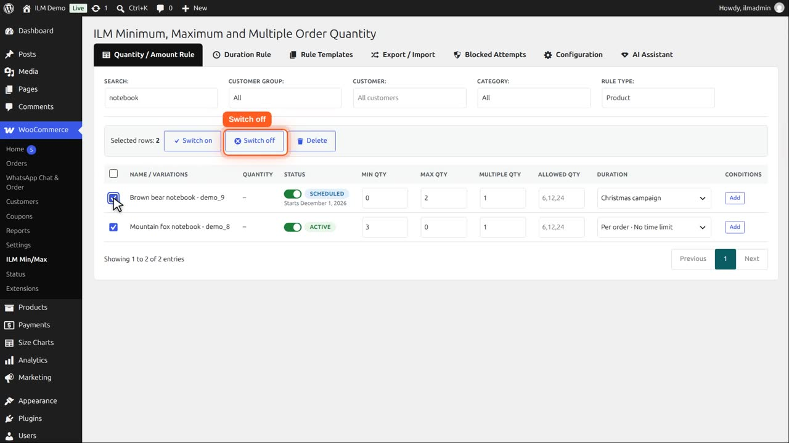

Pro add-on. This feature needs the Pro add-on. See Free and Pro.
The Status column says what the cart does with each rule right now:
| Status | Meaning |
|---|---|
| Active (green) | The cart applies the rule now. If its Duration Rule has an end date, it is shown below as Until <date>. |
| Scheduled (blue) | Its Duration Rule starts later (Starts <date>). Until then the next rule in line applies. |
| Expired (amber) | Its Duration Rule has ended (Ended <date>), so the rule no longer applies. Edit the Duration Rule to set new dates. |
| Off (grey) | Switched off in this table. The cart ignores the rule, but its values are kept, so switching it back on restores it exactly. |
Use the switch in the Status column to turn one rule off or on. Editing a rule that is off keeps it off. Tick the boxes in the first column (or the box in the header, for every row on the page) to Switch on, Switch off or Delete several rules at once from the bar above the table. Deleting asks for confirmation and cannot be undone.
If a rule's Duration Rule is switched off or deleted, the rule stays Active and applies to every order; an ⓘ icon next to Active says so.
The Status column tells you what the cart does with each rule right now. Active: the rule applies now.

Scheduled: its duration rule starts later, here in December. Until then the rule does nothing.

Expired: its duration rule has ended. Edit the duration rule to give it new dates.
Off: the rule was switched off. Its values are kept, so it can be switched back on exactly as it was.

Let us switch the Mountain fox notebook rule off, with the switch in its Status cell.
On the product page, the minimum of three is gone, and the customer can order one.

Switch it on again, and the minimum of three is back, unchanged.

For many rules at once, tick their boxes. The bar above the table shows how many are selected.
Switch off turns them all off together. Switch on turns them back on.

Delete removes the selected rules, after you confirm. A deleted rule cannot be brought back, so switching off is often the better choice.